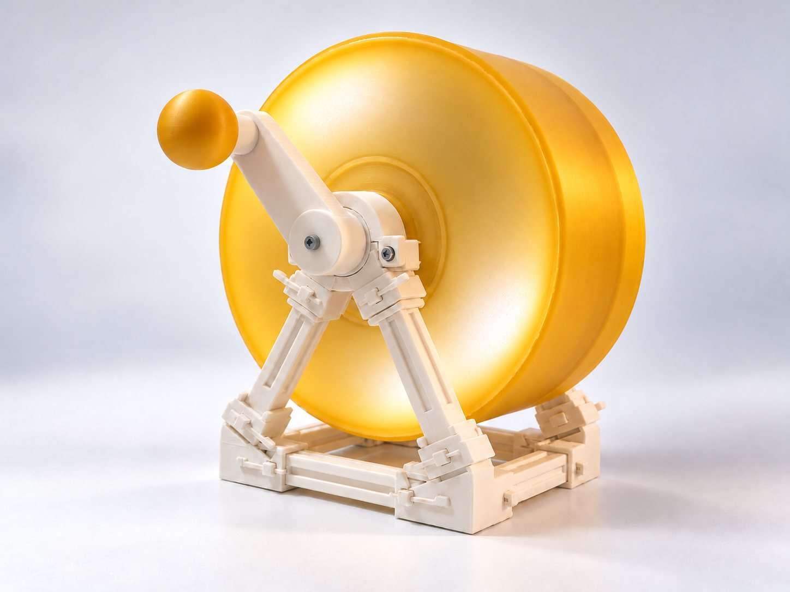

4.5바퀴
꺼짐 끝부터 최대 밝기까지 손잡이를 4.5바퀴 돌려요.
GARAPONL

Introducing GARAPONL
가라폰은 뽑기 기계의 둥근 통과 손잡이에서 출발했어요. 한쪽으로 돌리면 밝아지고, 반대로 돌리면 어두워지고, 손을 떼면 그 밝기를 그대로 기억합니다. 몸통 안의 MPU6050이 회전을 읽고, 아두이노 우노가 그 값을 밝기로 바꿔 백색 LED 두 줄을 켜요. 어두운 쪽에 회전을 더 길게 배분해서 은은한 빛도 손끝으로 고를 수 있습니다.

Assemble
Try it
다이얼을 잡고 돌리거나 휠을 굴려 보세요. 램프가 있다면 센서를 연결해서 진짜 손잡이로 돌릴 수 있어요.

1.4 / 4.5 turns
센서 없이 화면에서만 돌리는 중
Features
꺼짐 끝부터 최대 밝기까지 손잡이를 4.5바퀴 돌려요.
손을 떼면 마지막 밝기를 그대로 유지해요.
몸통 안 센서가 회전 방향과 양을 읽어요.
직접 설계한 핀과 키로 A자 프레임을 잡아요.
"돌리는 손맛이 그대로 빛이 된다."
"구조가 다 보이는데 깔끔하다."
"책상에 두고 싶다."
Gallery